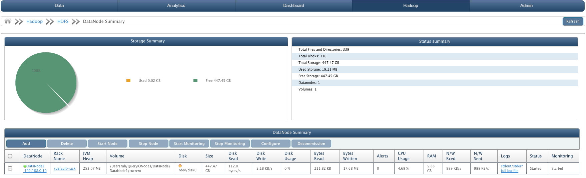
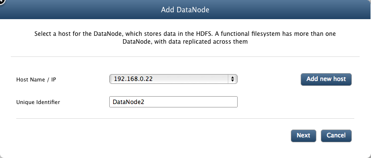
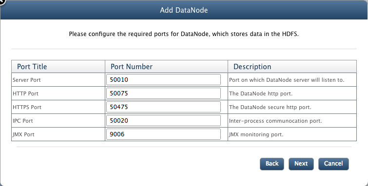
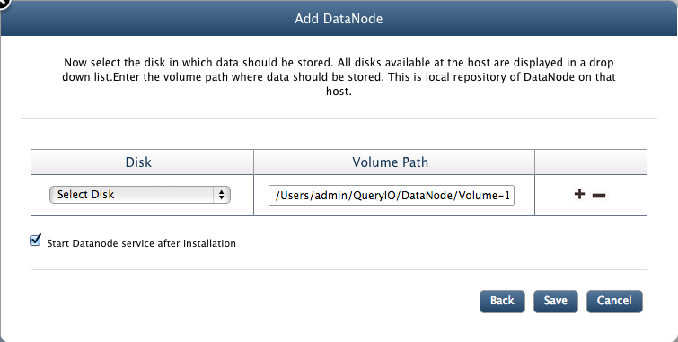
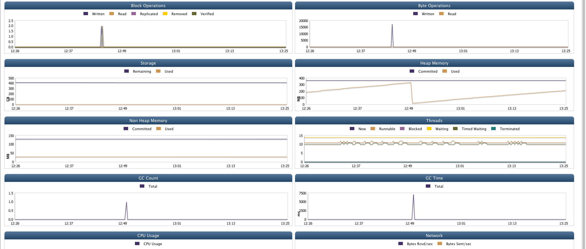

Hadoop DataNode
In this chapter
Following aspects of DataNode are explained in this chapter
What is DataNode
A DataNode stores data in the HDFS. A functional filesystem has more than one DataNode, with data replicated across them.
On start-up, a NameNode connects to the DataNodes. It then responds to requests from the NameNode for filesystem operations.
Client applications can talk directly to a DataNode, once the NameNode has provided the location of the data.
To manage DataNodes on your cluster, go to HDFS > DataNode.

DataNode Summary
Following details are displayed in DataNode summary:
- Storage Summary: A pie chart displaying amount of free storage versus used storage.
- Status Summary:
- Total Files and Directories: Total amount of files and directories present in all DataNodes.
- Total Blocks: Total amount of blocks present in all DataNodes.
- Total Storage: Total amount of storage space available for storage from all DataNodes.
- Used Storage: Amount of data stored on cluster.
- Free Storage: Amount of storage space free to use.
- DataNodes: Number of DataNode in the cluster.
- Volumes: Number of local repositories of DataNodes in cluster.
- Details of all DataNodes in the HDFS cluster:
- DataNode: Unique identifier and IP address name of the DataNode.
- Rack Name: Name of the rack in which DataNode is present.
- JVM Heap: The Java virtual machine heap is the area of memory used by the JVM, for dynamic memory allocation.
- Volume: Local repository of DataNode on that host.
- Disk: Label of the hard disk on which volume is mounted.
- Size: Total storage space available in the DataNode.
- Disk Reads: Rate of data read from cluster in bytes/s.
- Disk Writes: Rate of data written to cluster in bytes/s.
- Disk Usage: Percentage of disk used.
- Bytes Read: Amount of data retrieved from DataNode.
- Bytes Written: Amount of data stored on DataNode.
- Alerts: Alerts are generated when rules defined by user violates. It displays number of alerts generated.
- CPU Usage: Memory usage of DataNode system.
- RAM: Amount of random access memory available at DataNode.
- N/W Rcvd: Rate of data received through network in bytes/s.
- N/W Sent: Rate of data sent through network in bytes/s.
- Logs: Click on respective link to view 'stdout/stderr' logs or 'full log file'..
- Status: State of the DataNode i.e started or stopped.
- Monitoring: State of DataNode monitoring i.e. whether DataNode monitoring is started or stopped or not responding.
Add DataNode
Click on "Add" button to add DataNode to the cluster.
- Hostname/IP: Select the host from the drop down list.
- Unique Indetifier: A unique name for the node.

- Server Port: The port where the DataNode server will listen to.
- HTTP Port: The DataNode http server port.
- HTTPS Port: The DataNode https server port.
- IPC Port: The DataNode inter-process communication port.
- JMX Port: The DataNode jmx monitoring port.
- Click on next button to continue.

- Next screen will ask to add volumes for DataNode.
- Disk: Now select the disk in which data should be stored. All disks available at the host are displayed in a drop down list.
- Volume Path: Enter the volume path where data should be stored. This is local repository of DataNode on that host.
- Click on "+" icon next to the volume path if you want to add more than one local repositories.
- Click on "-" icon to remove volume path.
- Start node after installation: Select check box, if you want to start the DataNode just after it is installed. You can start the node later also.
- Click Save to complete the process.

Start/Stop DataNode
To start or stop a DataNode, select the check box against the node and click on Start or Stop button respectively.
Delete DataNode
To delete a DataNode from the cluster, select the check box against the the DataNode and click Delete.
But to delete a DataNode, it must be first decommissioned.
Click here to know more about node replacement and deleting a DataNode.
Start/Stop Monitoring
JMX monitoring takes place which checks DataNode's status, CPU Usage, RAM, N/W Rcvd, N/W Sent, Disk Read, Disk Write, Disk Usage, Bytes Read and Bytes Written. To start or stop DataNode Monitoring, select the check box against the node and click on Start Monitoring or Stop Monitoring button respectively.
Decommission
Before a node can be deleted, it must be decommissioned. When a DataNode is decommissioned, HDFS will copy all its data to other DataNodes(if any) and updates the NameNode data.
Decommissioned node will no longer be valid for storing data, but will be a part of cluster until it is deleted.To decommission a node, select the DataNode and click Decommission.
DataNode Details
DataNode in the menu displays all the DataNodes in the HDFS cluster. Just click on the DataNode name in the menu to get all the details of the DataNode system. Details are displayed in form of charts.
DataNode details contain:
- Storage Summary: A pie chart displaying amount of free storage versus used storage.
- Status summary: It has various details about DataNode:
- JVM Heap Used: Amount of storage used by java virtual machine for dynamic memory allocation.
- JVM Started On: Time when java virtual machine was started on DataNode.
- Total Bytes Read: Amount of data retrieved from DataNode.
- Total Bytes Written: Amount of data imported to DataNode.
- Total Blocks Read: Number of blocks read from DataNode.
- Total Blocks Written: Number of blocks written to DataNode.
- Total Storage: Total amount of storage space available.
- Used Storage: Amount of storage space used.
- Free Storage: Amount of storage space free to use.
- Total Alerts: Number of alerts generated on DataNode.
- Shows monitoring data of the DataNode host machine. It uses JVM matrix to display data in the form of charts. Time interval between which data is displayed can be varied from 1 day to 360 days.
This data is further used to generate reports and forecast. It can also be used diagnostic purposes.
Various charts displayed are:
- Block Operations: Shows Number of blocks added with respect to time.
- File Operations: Number of file operations like Create File, Delete File, List File, Total Files Read, Total Files Written performed.
- Storage: Used and Free storage space available with respect to time.
- CPU Usage: Amount of CPU usage
- Heap Memory: Heap memory committed and used with respect to time in MB.
- Non Heap Memory: Non heap memory committed and used with respect to time in MB.
- Threads: Number of Running, Blocked, Waiting, Timed Waiting, Terminated, New threads with respect to time period.
- Network: Bytes received and sent through network in bytes/s.
- GC Count: Total GC Count with respect to time.
- GC Time: Total time required for GC in ms.
- Disk: Bytes read and written on disk in Bytes/s.

Copyright © 2017 QueryIO Corporation. All Rights Reserved.
QueryIO, "Big Data Intelligence" and the QueryIO Logo are trademarks
of QueryIO Corporation. Apache, Hadoop and HDFS are trademarks of The Apache Software Foundation.